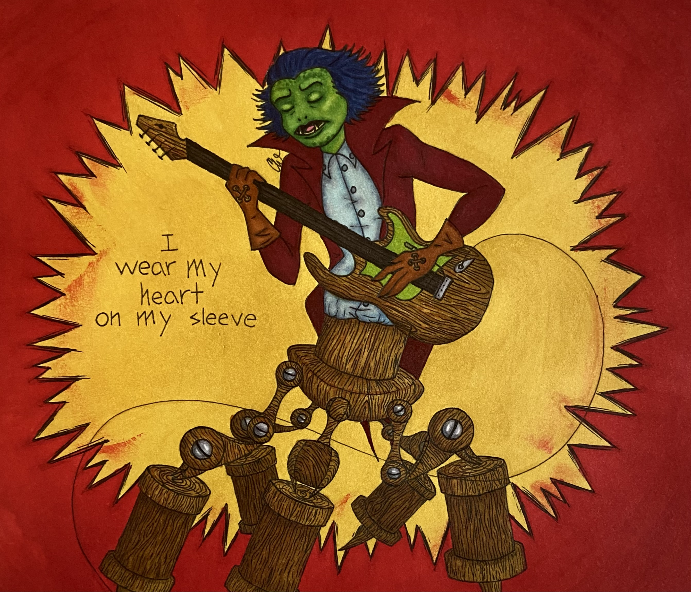
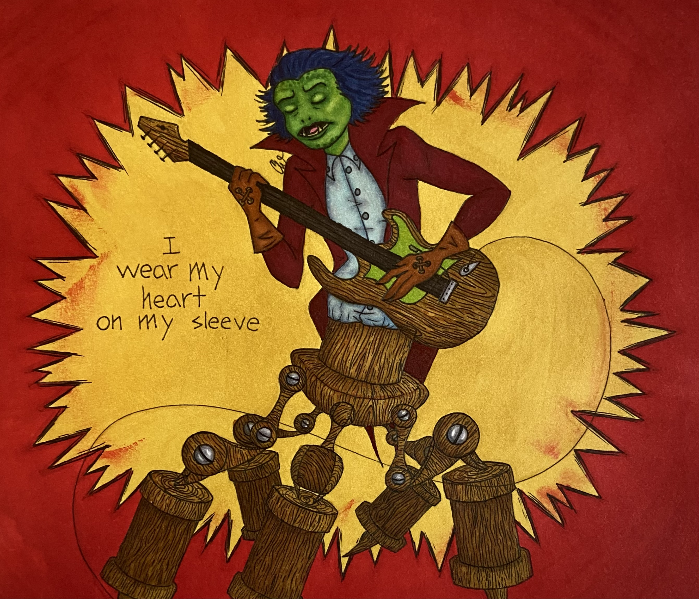
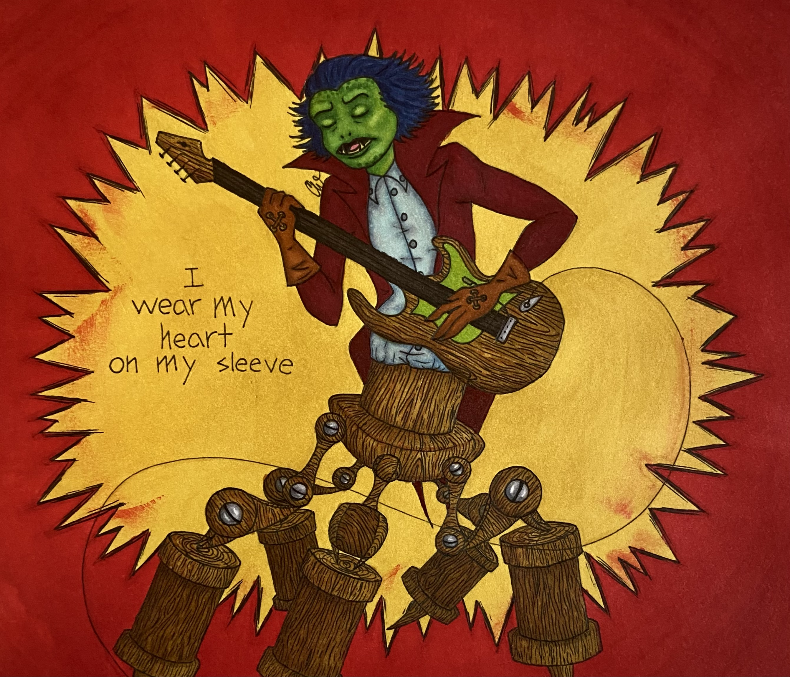

Charlotte Wenzel
What would have happened if skekSo had not disgraced skekShod for voicing his opinion? The Skeksis may have overall been less corrupt if they each had an open voice on how Thra was ruled (well, it most likely would not be all pure and honest, as the Skeksis are literally pure evil, but the relations might have been slightly better between them). And skekShod certainly would not have retreated so much into the sidelines if he were not so abused by skekSo. He might have felt like a more valued member of the court if his opinion had been listened to, and he probably would not have decided against speaking much.
Interesting that skekZok was the first to address skekSo as Emperor, yet skekZok was the one with whom skekShod seemed closest. Perhaps skekShod had ulterior motives, maybe borrowing skekZok’s scepter was a part of this. Perhaps skekShod did not simply covet it for its elegance and the fact that it was not his, but maybe he had something planned with this transaction, maybe skekShod had planned to get skekZok in trouble with the Emperor for missing his scepter. After all, each of the Skeksis had their own scepter they held during rituals. How embarrassing would it be if the Ritual Master was the only one without his scepter?
Although, skekZok does care about ceremony more than any other Skeksis, so it could be possible that no one else would care besides him. But maybe that was skekShod’s plan as well. If skekZok felt ill-prepared for leading one of his rituals, perhaps he would sabotage himself due to a change occurring, making a fool of himself before the others. However, skekZok always seems very composed, surely someone more timid like skekTek would be more affected by a small change, not skekZok. And if skekShod had the capacity to throw off other Skeksis like that, he most likely would have received more power and been more valued and feared by the other Skeksis.
Experience
Assembler
• Assembled various machine parts for bulk orders.
• Packaged and counted parts for later assembly or shipment.
• Took inventory of stored items and weighed them in quality control.
Cashier
• Worked alongside chefs to serve and prepare meals.
• Refilled food and drinks for customers and restocked plates, silverware and PPE.
• Cleaned tables, floors, high-touch areas, dishes and bathrooms.
Crew Member
• Prepared ice creams, Blizzards and shakes and memorized their ingredients.
• Restocked toppings, ice cream, cups and utensils for the Chill station.
• Cleaned Chill station counters, swept floors and washed dishes.
Education
University of California, Riverside
Quartz Hill High School
Portfolio


 

